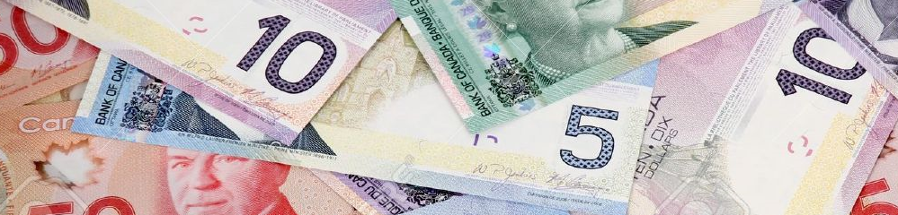

"Plus taxes"17 novembre 2016
Bienvenue au royaume de l'incompréhension totale pour un français !
Prix hors taxe
Les prix sont systématiquement affichés hors taxe.
Sauf pour les produits de première nécessité. Et là, vas savoir ! d'autant qu'aucune indication sur les étiquettes te permettent de le savoir.
Mieux vaut donc ne pas être au centime près ici, sinon c'est un véritable casse-tête pour un français moyen !
Au Québec, parce que cela dépend de la province, il faut rajouter environ 15% pour avoir le prix TTC. Une télé affichée 1000$ coûtera donc 1150$ à la caisse.
"Plus taxes"
Ils sont gentils, car ils mettent des fois l'indication "plus taxe" !
Par exemple pour les amendes ("500$. Plus taxe.") !
Tips
Comme si ce n'était pas assez compliqué, rajoutons aux taxes les tips ! c'est-à-dire les pourboires.
Et là, je n'ai toujours pô complètement compris, tabernacle ! En résumé, dès qu'il y a un service, tu dois donner un pourboire, c'est la règle, et c'est aussi le salaire de la personne.
Si tu ne donnes pas de tip, c'est comme si tu ne payais pas la personne ! c'est donc TRES TRES MAL d'oublier de le donner !
C'est 15% du prix hors taxe pour un tip moyen, et au Québec, ça correspond à la somme des deux taxes (taxe provinciale et fédérale) : ouf !
Si tu veux pas t'emmerder avec tout ça, paye en carte, car il y a une touche pour saisir le montant en $ ou % du pourboire ;)
C'est pourtant facile, tu ne fais aucun effort PJ
En gros, tu dois donner un pourboire dès qu'il y a un service comme je l'ai dit : au restaurant (sauf si on ne te sert pas à table comme les fast-food), dans un bar (même si on te sert au comptoir), chez le coiffeur (mais c'est moins que 15% soi-disant, je ne sais toujours pas combien car les versions de mes amis diffèrent), les taxis (mais certains disent que ce n'est pas obligatoire, et d'autre que si), le livreur de pizza (mais pas toujours car ça peut être inclu dedans mais je n'ai toujours pas compris le fonctionnement)
A la boulangerie, ou d'autres petits commerces, c'est bien vu de donner un petit pourboire, genre 5/10 cents.
Pas de panique, ce n'est pas du tout mal vu de dire que t'es un boulet, un petit nouveau, et que tu ne sais pas s'il faut donner un pourboire ; on ne t'arnaquera jamais... soi-disant.
"De touts de façons, je n'ai jamais rien compris... alors un peu plus ou un peu moins..." (private joke, hein Flo)
Températures
Vous êtes nombreux à me demander si je me pèle les couilles :)
Et bein non ! à cette époque, il ne fait pas encore vraiment froid ; on est autour de 10 degrès. Ils prévoient les premières neiges la semaine prochaine. Ce week-end 15 !
Mais le temps change très vite, les amplitudes sont importantes, il peut très bien faire 15 un jour et -5 le lendemain !
Alors... wait & see pour la nèèèèèèèiiiiiiiiiiiiiiiiige, comme ils prononcent :)
Quelques photos en vrac de Montréal...
Terminé les couleurs rouges / oranges d'automne, maintenant les feuilles sont pour la plupart tombées, ou tirent uniquement vers le jaune fluo !
... Le saviez-vous ?
- Au Québec, ta petite copine est ta "blonde" (même si elle est brune)
- Une voiture est un char
- On ne commandera pas un café "normal", mais un café "régulier" (provient de l'anglais "regular")
- Vous entendrez souvent par exemple "5 pièces et 10 sous" pour 5,10$
- On ne dit pas tu veux ou tu peux, mais tu veux tu ou tu peux tu
- Pour dire de rien, on dira plus souvent "bienvenue" (mais ça je l'ai déjà dit) ou encore "ça fait plaisir"
- On ne dit pas "c'est bon", mais "c'est beau"
- Le Québec fait environ trois fois la superficie de la France, mais compte seulement 8 millions d'habitants
- Le Canada tout entier compte 35 millions d'habitants, soit deux fois moins qu'en France